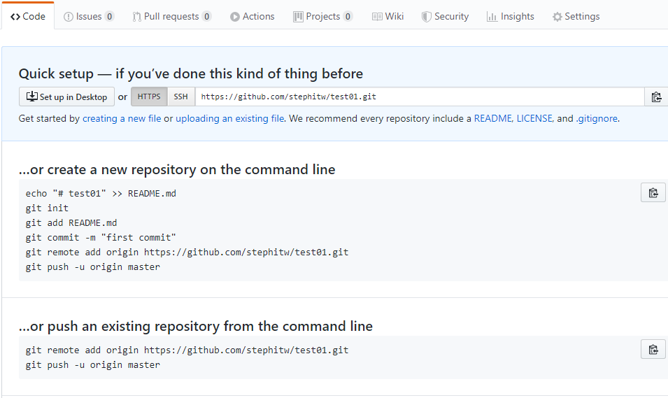

Trabajando con repositorios remotos
Los cambios incluidos en los repositorios locales se pueden sincronizar con un repositorio remoto. El que se puede almacenar en un servidor propio, en una carpeta o en un servicio de terceros. Entre los servicios para almacenar repositorios Git el más popular es GitHub, aunque existen diferentes servicios alternativos.
Clonar un repositorio
Subir un proyecto a un repositorio remoto
Para poder subir un proyecto de un repositorio local a un repositorio remoto, hay que cumplir con lo siguiente:
- Tener una cuenta en github
- Haber creado un repositorio en github
Con esas condiciones cumplidas, podemos subir nuestro repositorio con los comandos siguientes:
git remote add origin https://github.com/nombreUsuario/repositorio.git git push -u origin master
Encontramos esos comandos en la pagina de github, una vez creado el repositorio.
Clonar un repositorio
Esto es lo que se tiene que escribir cuando se desea subir datos a un repositorio remoto. Para descargar los cambios de un repositorio remoto existente es necesario ir a una carpeta y escribir el comando clone. Por ejemplo, para un proyecto existente en GitHub el comando seria de la forma:
git clone https://github.com/nombreUsuario/repositorio.git
Esto descarga el proyecto completo desde el repositorio remoto. En posteriores ocasiones, para descargar los cambios de otros programadores, se tiene utiliza el comando pull de Git. Es decir, se tiene que escribir
git pull